캠페인 홈페이지를 직접 제작
Claude Code로 캠페인 홈페이지(이 사이트의 전신)를 처음부터 직접 만들었습니다. 외주 없이 기획·디자인·개발·배포를 혼자 담당해, 필요한 페이지를 필요한 때에 즉시 만들고 고칠 수 있는 구조를 갖췄습니다. 단순 소개 페이지에 그치지 않고, 유튜브 영상 섹션과 주민이 직접 정책을 제안하고 좋아요로 호응하는 기능(Firebase 실시간 연동)까지 동작하는 형태로 구현했으며, 메인 페이지 외에 대상별 랜딩페이지도 직접 제작했습니다.
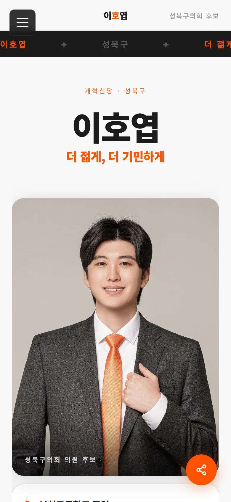
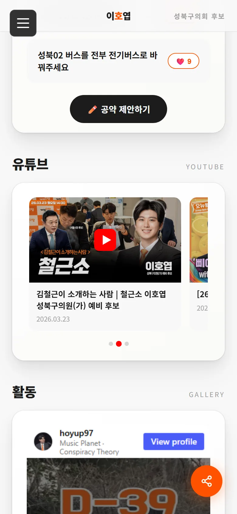
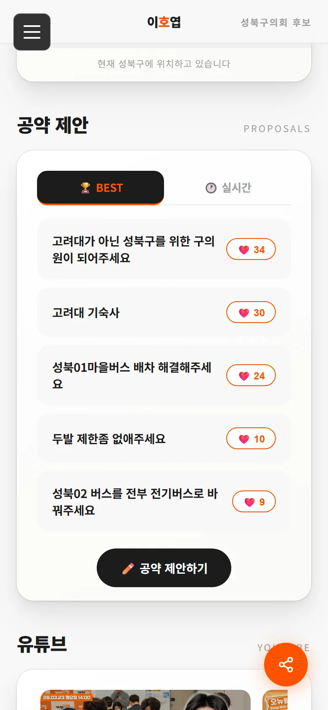
위치 데이터로 유세 지역을 결정
실시간 위치공유 앱을 개발해 홈페이지에 이식하고, 수집된 위치 로그를 Firebase에 축적했습니다. 이를 히트맵으로 분석해 다음 유세 지역을 감이 아니라 데이터로 결정했습니다.
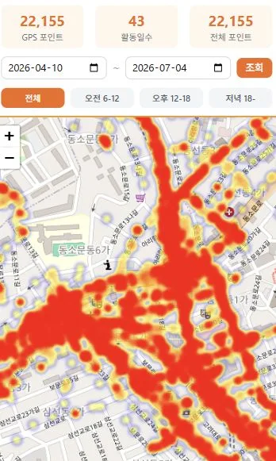
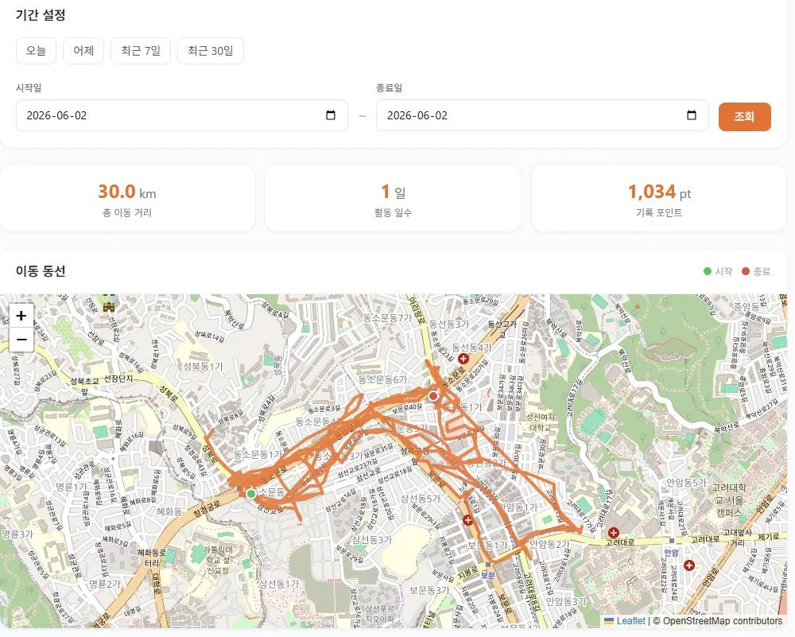
회의록 12년치를 크롤링·구조화
성북구의회 회의록 12년치 전체를 크롤링해 PDF·Markdown으로 구조화하고 분석해 공약을 도출했습니다. 같은 파이프라인을 대구 중구의회·경기도 등 다른 지자체 의회에도 재사용할 수 있도록 설계했습니다.
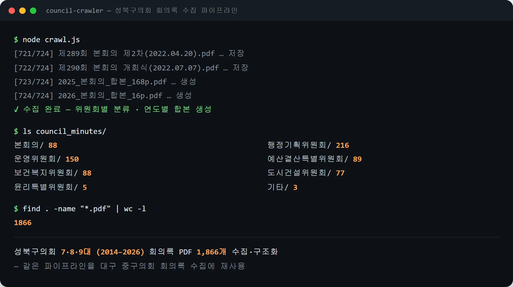
대상별 랜딩페이지
공약별·대학별(고려대·성신여대·한성대) 세그먼트별 랜딩페이지를 각각 제작해, 대상에 맞는 메시지로 운영했습니다. 방문자의 관심사에 맞는 페이지에서 필요한 정보를 바로 전달했습니다.
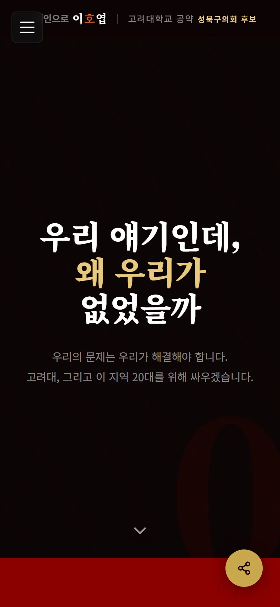
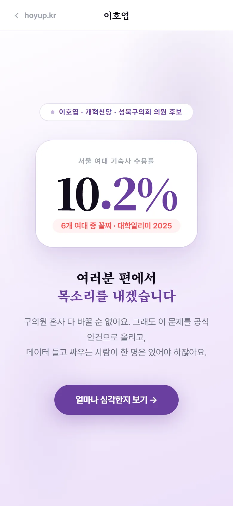
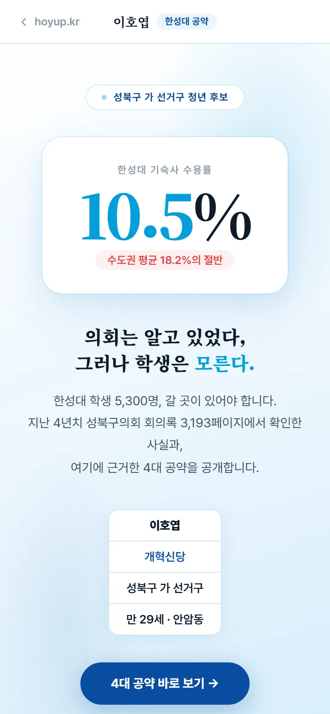
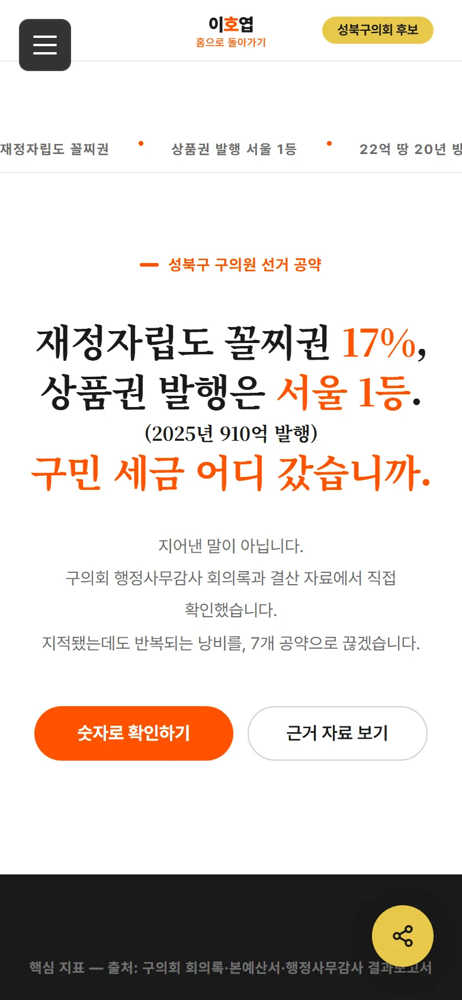
지역 중심 SNS와 타깃 릴스
지역 거주 추정 로직을 설계해 SNS 팔로워를 지역 중심으로 구축했습니다. 플랫폼 가이드라인을 준수하는 방식으로 운영했으며, 지역 타깃 릴스를 직접 기획·제작해 일 최고 95,000회, 주간 250,000회 조회를 기록했습니다.
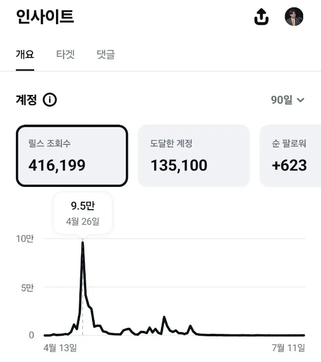
현수막·명함 제작과 현장 영업
Illustrator로 현수막과 명함을 직접 디자인하고, 2개월간 5만여 명을 만나 명함 1만 장을 직접 전달했습니다. 만드는 것에서 끝내지 않고, 발로 뛰어 결과를 검증했습니다.
선거 당시 홈페이지를 그대로 체험해보기
스크린샷이 아니라, 캠페인 당시 운영하던 페이지의 실제 보존본입니다. 아래 프레임에서 직접 스크롤하며 둘러볼 수 있습니다.